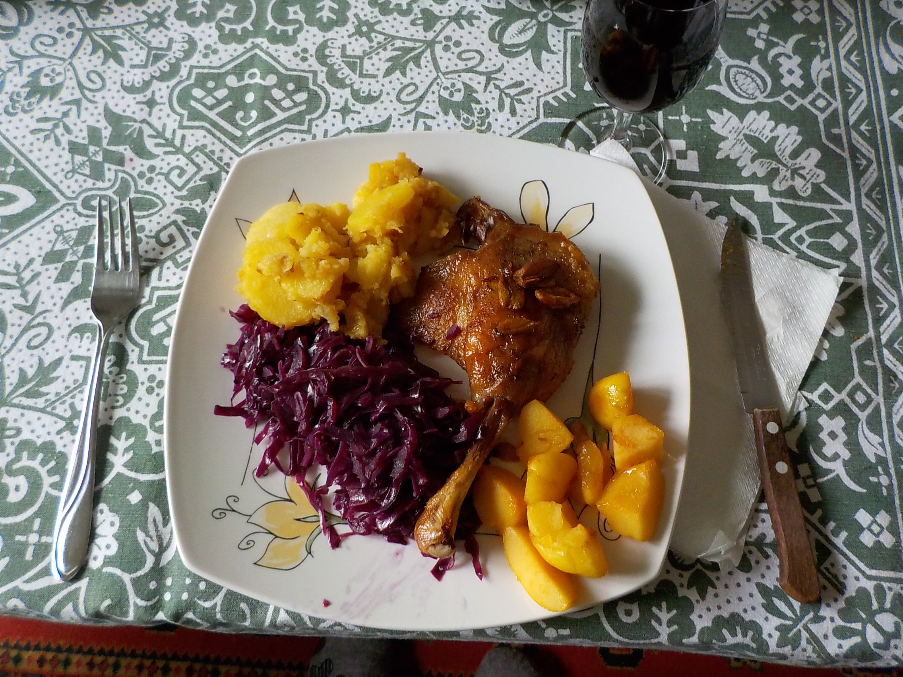
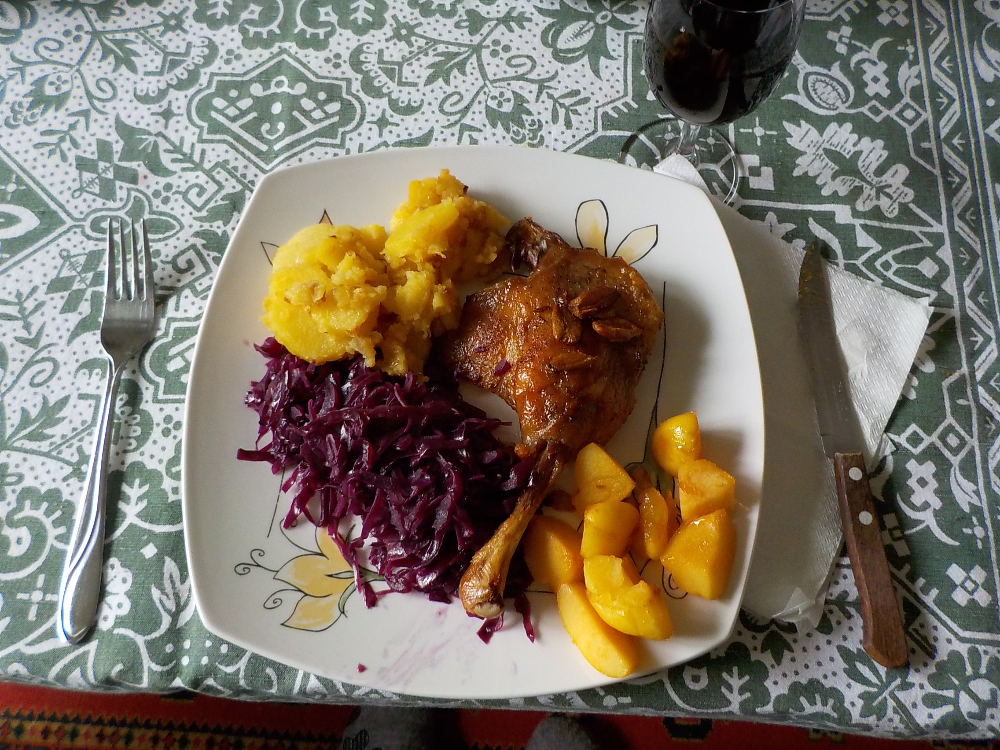

Családi finomságok recept gyüjteménye kapcsán írhatsz nekem, vagy küldhetsz újabb recepteket és fényképeket a lenti linkre kattintva. Elérhető vagyok telefonon, Viber-en és WhatsApp-on is.
Ez egy családi recepteket összegyűjtő weboldal.
Béresné Fehér Ágnes vagyok, a Béres család egyik idősebb női tagja.
Évek óta főzöm családunk és rokonaink igen finom és népszerű ételeit, amelyek közül több kedvencünkké is vált. Néhány receptet már a korszerűbb és egészségesebb táplálkozás alapanyagaiból készítünk. A családi finomságok közt fiatal családtagok népszerű ételeinek leírásai is helyet kaptak. Mivel a süteményekhez fontos a hozzávalók mennyisége, ezért csak a desszertek hozzávalóinál írtam mennyiségeket, a leveseknél és a főételeknél csak utalok a mennyiségre, itt az adag nagysága, a főzőedény mérete ill. az igények számítanak.
Köszönet az édesanyámnak, az anyósomnak, lányaimnak és minden családtagnak e sokak által kedvelt családi finomságokért!
Családi finomságok recept gyüjteménye kapcsán írhatsz nekem, vagy küldhetsz újabb recepteket és fényképeket a lenti linkre kattintva. Elérhető vagyok telefonon, Viber-en és WhatsApp-on is.
 
